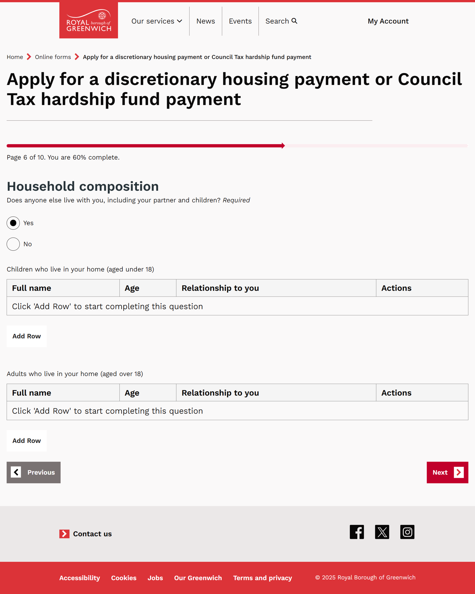
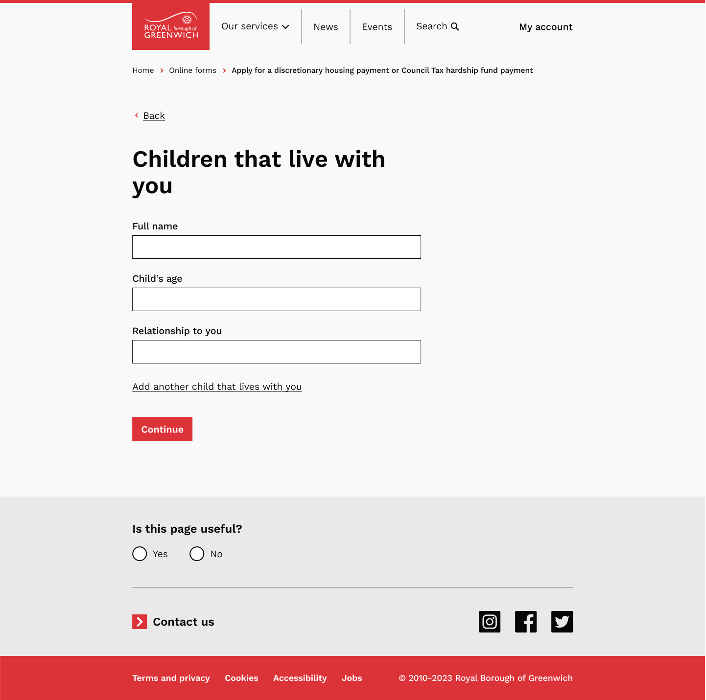

The project in brief
I led the redesign of the Discretionary Housing Payment and Council Tax Hardship Fund application journey at the Royal Borough of Greenwich. The work brought together content, service requirements, interaction patterns, evidence collection and the information the benefits team needed for assessment.
The resulting journey introduced earlier eligibility checks, conditional questions, repeatable household records and a route for outstanding evidence. A ten-week post-launch review recorded 279 submissions, encouraging qualitative feedback and unresolved completion and evidence issues. The review informed the next round of service improvements.
The problem crossed the whole service
Two support schemes had been combined into one application journey. Residents could invest substantial effort before finding out they could not proceed. Financial information was collected in a large weekly table, while supporting documents could interrupt completion.
For the benefits team, inconsistent information created clarification and follow-up work. Residents who needed help could rely on caseworkers or visits to council offices. Rewriting individual labels would not, on its own, change those dependencies.
What must we ask, when should we ask it, and what happens when someone cannot provide it now?
My contribution and collaboration
I mapped the existing process, developed the form-design approach and organised co-design sessions with the service. I worked with product designers and developers on reusable components and patterns, while checking that the journey continued to meet assessment requirements.
My contribution was the architecture and behaviour of the application: question sequence, branching, the structure of financial information, evidence preparation and review. Product and development collaboration was essential to making those choices work as interactions.
Four decisions that changed the journey
1. Establish critical eligibility before asking for more effort
I moved the questions that determine the appropriate route towards the beginning. Residents could understand an eligibility stop before completing household, income and expenditure sections.
In usability testing, participants understood the early stop and valued knowing they did not need to continue unnecessarily. This provided qualitative support for the decision; the available records do not specify the participant count.
- EligibilityEstablish the relevant route
- HouseholdAsk only for relevant people
- FinancesCollect income and outgoings in sections
- EvidencePrepare, upload or identify what is outstanding
- Review and submitCheck the information and next steps
Architecture summary redrawn from the project sources; not a live eligibility checker.
2. Replace a dense household table with repeatable records
The journey first establishes whether the applicant lives with anyone. Where details are needed, a person can be added at a time. This accommodates different household sizes without presenting an empty table as the starting point.
The pattern also had wider value: the same interaction approach can support an unknown number of people, debts or conditions in other transactions.


3. Preserve the meaning of financial questions while reducing interpretation work
Research identified ambiguity around “additional income”. I refined the wording so residents could distinguish Universal Credit from other income, with an explicit “No additional income” option.
I grouped financial information into more manageable tasks. The aim was to make the information understandable to residents while preserving the distinctions assessors need. The review’s staff feedback later described clearer income and expenditure totals and separation of debts from repayments.
4. Treat evidence as a journey with a recovery route
Preparation pages explain what documents are relevant and why before asking someone to find and upload them. Where evidence cannot be supplied immediately, the journey accounts for outstanding documents and makes the subsequent requirement visible.
This separates submitting the application from having supplied everything needed for assessment. The service still needs the evidence; a missing document does not have to mean starting the whole application again.
A route to provide evidence later
The form supports a real interruption in the applicant’s situation.
Does the evidence actually arrive?
Completion alone cannot establish whether the wider assessment process works.
What the ten-week review shows
The working board’s “Impact of redesign” frame records the following aggregate results. These are observations from the review, with their original scope preserved.
Evidence submission was still a substantial part of the work
The review records 42.4% uploading all evidence first time and 57.6% choosing to supply some later. That supports the relevance of a recovery route, but it does not establish that outstanding evidence was subsequently received.
A separate staff note says 64% included evidence among cases where a payment had been made. That is a different cohort. I do not combine it with the 42.4% figure or present the difference as an improvement.
Feedback supported some decisions and exposed gaps
The board records 22 resident-feedback entries, including 20 saying the confirmation page was helpful. Another entry highlighted uncertainty about which supporting documents to provide. These are feedback entries, not a representative satisfaction survey.
One staff response described the new form as easier to work through, particularly the income and expenditure totals and the distinction between debt and repayment. That is a useful operational signal from one recorded response, not a measured team-wide productivity gain.
The completion result needs investigation
The review records a 36.3% completion rate and a note referring to a 43% baseline. The event definitions, denominators and alignment of the comparison periods are not supplied in the reviewed material. I cannot claim a completion uplift from those figures.
The appropriate next step is to verify the funnel, then examine where people leave or encounter errors, including the money section. The review also records 17 issue reports. Their subjects include upload problems, financial terminology, validation, navigation and requests for help.
What shipped, and what remained to improve
After launch, the service received applications through the new form and staff reviewed the information it produced. The review identified further work: investigating completion, making document requirements clearer and supporting people who cannot complete the form independently.
Save-draft functionality is discussed as a future change in the review. I therefore do not attribute the recorded results to a completed save-and-return release. The review also proposes including the resident’s email text in the PDF received by staff, so both sides can see what was communicated.
Reflection
This project made the operational consequences of content decisions visible. Question order affects resident effort; evidence messaging affects follow-up work; the structure of financial information affects what an assessor can interpret.
I would define operational measures earlier: follow-up contact, missing evidence, assisted applications and processing time, alongside a clearly specified completion funnel. I would also maintain a research repository linking each observation to the design change it prompted.
Evidence notes
This case study combines the supplied Notion narrative with the live Miro project board: project roles, the original service problems, reusable patterns, reflections and the “Impact of redesign” frame. The screenshots show blank form artefacts from the project. The architecture summary is redrawn for this portfolio.
The ten-week review does not specify calendar dates, analytics event definitions or the denominator behind each rate. No annualised savings, causal completion improvement or measured reduction in staff follow-up is claimed here. The earlier estimate that staff followed up around 70% of cases remains a baseline question, not a verified post-launch result.